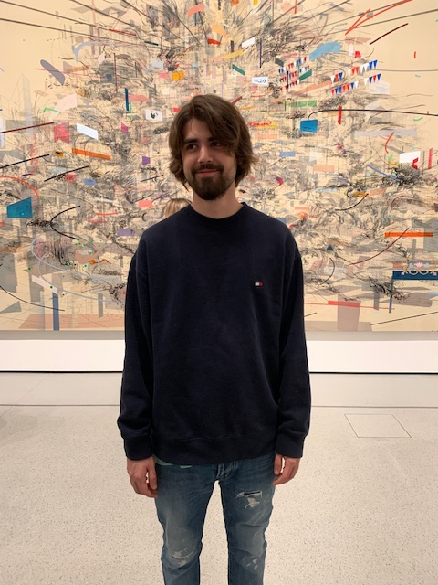
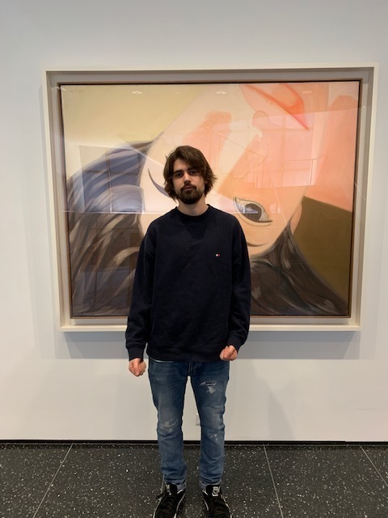
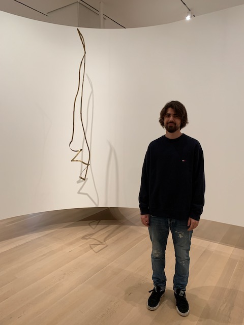
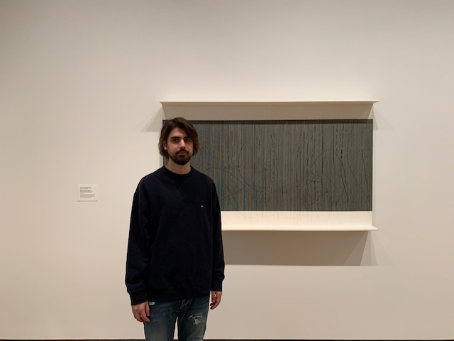
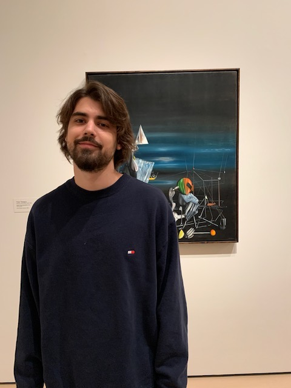

I VISITED THE MOMA

1. The name of the artist that made this piece is “Isak Kingelez”.
The piece itself is named “Congolese” and it was created in 1991. I
wanted to document myself at this piece because it stopped me while
I was walking by it and no other artwork had done that until I saw
this one. I was drawn to it because of its massive size and all the
different colors it had. The composition reminded me of a busy city.
The line marks resembled movement and so do the strips of light. The
strips of light especially reminded me of cars moving at night in
Manhattan and the sharp line marks seem to be all moving towards one
point almost like how avenues look in Manhattan as well. This is
probably the main the reason I was so attracted to this artwork,
because there are so many subtle hints to city life and movement
much like NYC.

2. This artwork was made by “Alex Katz”. It is named “Upside Down
Ada” and it was created in 1965. I was drawn to this piece because of
its use of color and the materials used. This piece is only made out of
oil on canvas which is rare for being in MOMA. Most of the other pieces
are some kind of cool instillation or crazy metal statue. I am also a huge
fan or traditional paintings which is also why I really liked seeing this
at the MOMA. The placement of this piece was also by the restrooms and a
staircase that also had chairs, so this was the only piece that I had
a moment to actually sit down and look at for a long period of time which
made me like it even more.

3. The artist of this metal sculpture is named “Gyula Kosice”. It is named
“Articulated Mobile Sculpture” and it is made out of brass. I really liked this
piece because in the description I read that this artwork is meant to be manipulated
by the viewer. I thought that this idea of the artist was so interesting to allow the
viewer to have a say in the artwork. This piece is also very eye catching for its simplicity
and posture. I also read in the description that this artwork’s looks very shiny and
expensively made but it’s actually made from everyday materials that have been
heavily polished.

4. This piece is named “Neumann Vibration-Writing”. It was created by a man named “Jesus
Rafael Soto” in the year 1964. I really liked this piece because it played eyes while I
walked by it. There are strings placed in front of and illustration that has carefully
placed on it as well, so that when you walk by it the vertical lines play tricks with your
eyes almost like and effect in the Adobe program Premiere Pro. I enjoy using this program
a lot which is why I also really liked this piece. To me it almost felt like one of these
effects had come to life and I was watching it in real time.

5. The last piece of work that I documented was by and artist named “Yves Tanguy”. His was is
named “Slowly Toward the North” and it was created in 1942. I really like this artwork because
it reminded me a lot of Salvador Dali’s work. It had a scene of realism and a twist of modernism
all in the same composition. There also vibration color combinations that really complement each
other well. There is also a great sense of depth that makes the viewer feel that they are on a wide
desert plane of some kind only by using two colors in a very subtle way. All of these different elements
were put together in a very interesting way by this artist which made me attracted to it.